TECH RWT Discovery: Science और Technology आसान हिंदी में
TECH RWT Discovery पर विज्ञान और तकनीक की खबरें और गहरी पड़तालें आसान हिंदी में मिलती हैं। हर लेख के अंत में स्रोत दिए जाते हैं और कठिन शब्द सरल भाषा में समझाए जाते हैं। ताज़ा लेख नीचे देखिए, या सीधे किसी विषय पर जाइए: Science, Space & ISRO, Technology & Future Tech, Environment और Innovation। पूरी सूची के लिए सभी लेख देखिए।
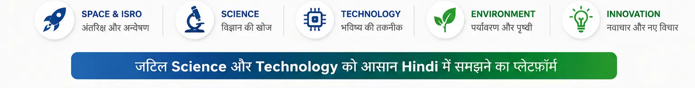
नवीनतम प्रकाशन (Latest Articles)
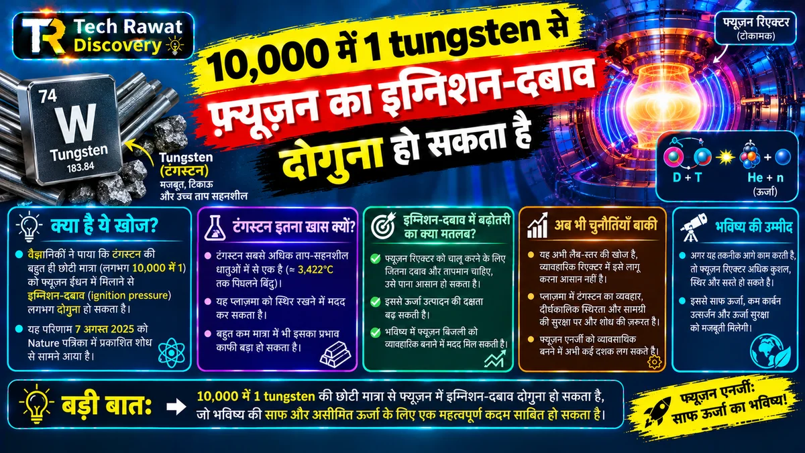
10,000 में 1 tungsten से फ़्यूज़न का इग्निशन-दबाव दोगुना हो सकता है
PPPL के सैद्धांतिक मॉडल के अनुसार दीवार से आया 0.01% tungsten फ़्यूज़न इग्निशन का दबाव करीब दोगुना कर सकता है। जानिए क्या हुआ, क्यों, और ITER-IPR वाले भारत के लिए मतलब।
पूरा लेख पढ़ें →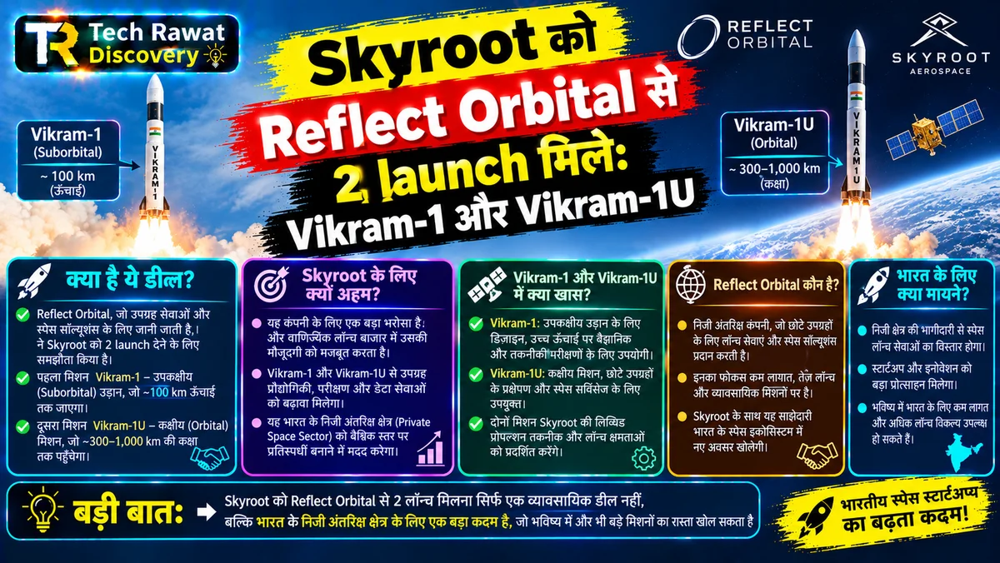
Skyroot को Reflect Orbital से 2 launch मिले: Vikram-1 और Vikram-1U
अमेरिकी कंपनी Reflect Orbital ने 14 अक्टूबर 2026 को Skyroot से दो launch खरीदने की बात बताई। सौदे में क्या पक्का है, आईने वाले Eärendil-1 से रिश्ता क्या है, और भारत के लिए दांव क्या हैं।
पूरा लेख पढ़ें →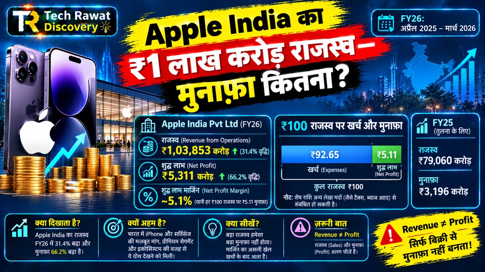
Apple India का ₹1 लाख करोड़ राजस्व: मुनाफ़ा आख़िर कितना बचा?
Apple India का FY26 राजस्व ₹1,03,853 करोड़ रहा और शुद्ध मुनाफ़ा ₹5,311 करोड़। जानिए इन आँकड़ों के चार आम भ्रम, निर्यात से फ़र्क़ और भारत के लिए इसका मतलब।
पूरा लेख पढ़ें →Gwalior टेलीकॉम जोन में 5,500 करोड़ के प्रस्ताव, पर निवेश अभी बाकी
Gwalior के टेलीकॉम मैन्युफैक्चरिंग जोन के लिए 24 कंपनियों ने 5,500 करोड़ रुपए के प्रस्ताव दिए हैं, पर लक्ष्य 10,000 करोड़ से ऊपर है। दिल्ली-मुंबई बैठकों की तुलना और शिलान्यास की तारीख।
पूरा लेख पढ़ें →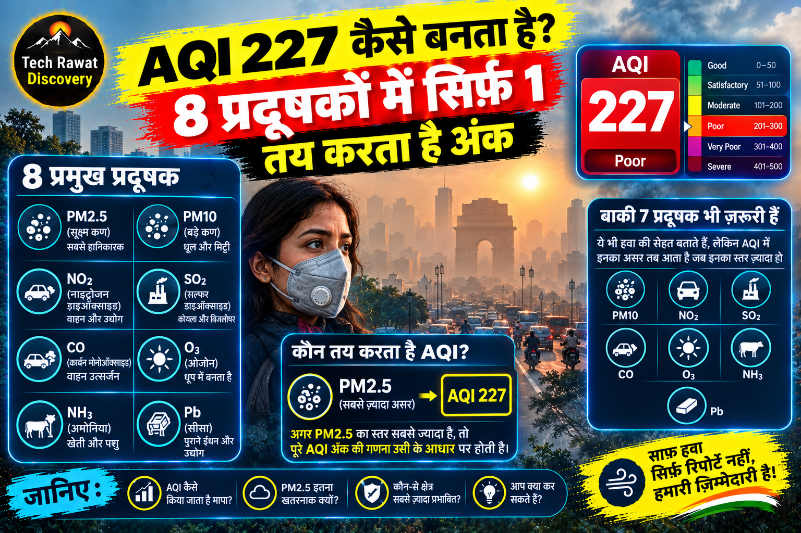
AQI 227 कैसे बनता है? 8 प्रदूषकों में सिर्फ़ 1 तय करता है अंक
दिल्ली में 21 अक्टूबर की सुबह AQI 227 रहा। CPCB का यह अंक आठ प्रदूषकों के अलग-अलग अंकों में से सबसे ऊंचा चुनकर बनता है। पूरा हिसाब एक काल्पनिक उदाहरण सहित समझिए।
पूरा लेख पढ़ें →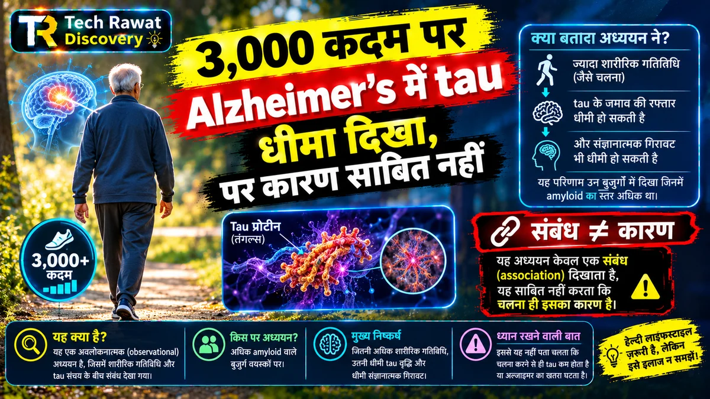
3,000 कदम पर Alzheimer's में tau धीमा दिखा, पर कारण साबित नहीं
रोज़ 3,000 कदम और Alzheimer's की खबर 'नई स्टडी' बनकर फिर फैली, पर पेपर नवंबर 2025 का है और नतीजा जुड़ाव का है। तीन भ्रम, तथ्य और भारत के बुज़ुर्गों के लिए मतलब।
पूरा लेख पढ़ें →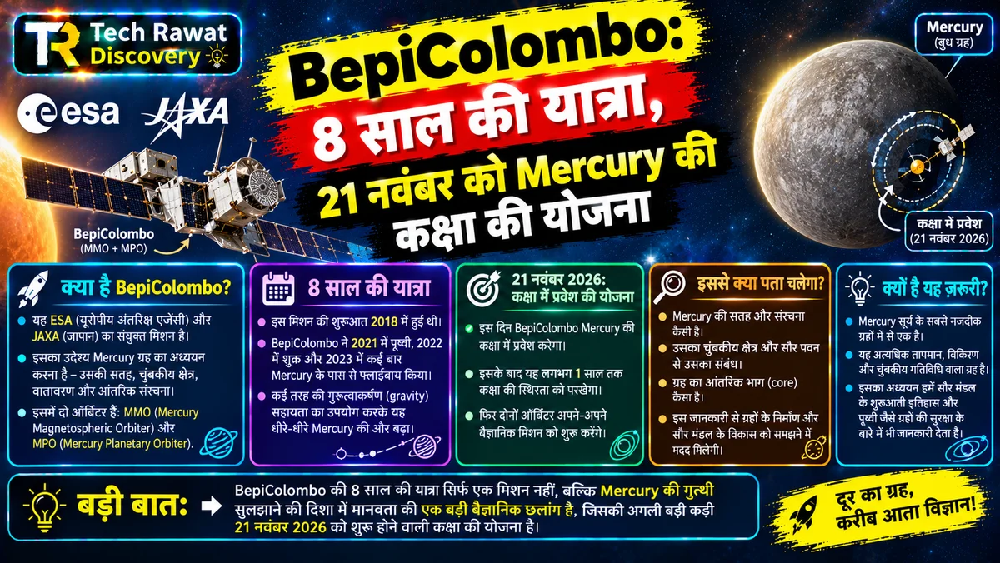
BepiColombo: 8 साल की यात्रा, 21 नवंबर को Mercury की कक्षा की योजना
BepiColombo को Mercury पहुंचने में 8 साल लगे। जानिए MESSENGER से तुलना, 21 नवंबर की कक्षा-प्रवेश योजना, MPO-Mio की कक्षाएं और Mangalyaan से सीधा मुक़ाबला।
पूरा लेख पढ़ें →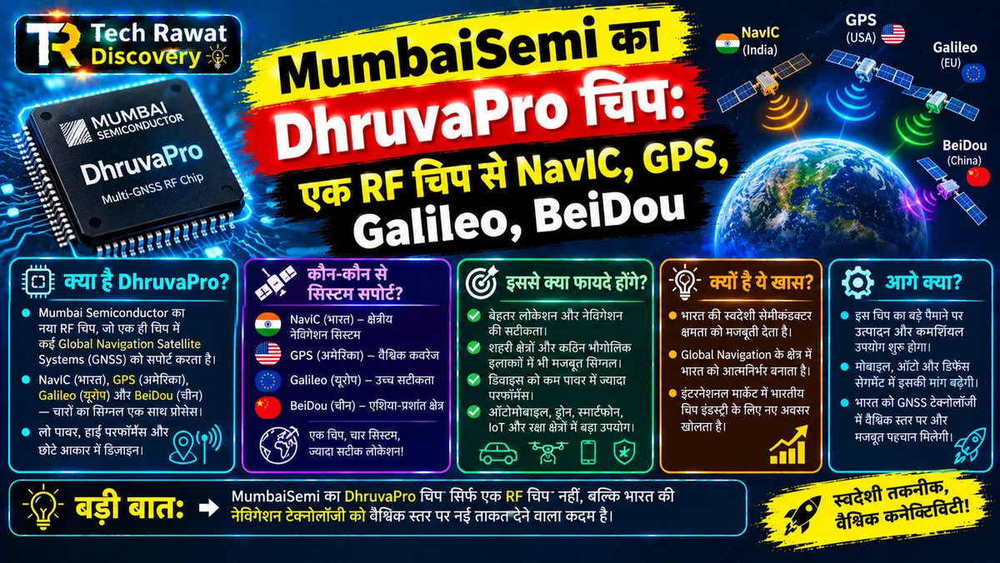
MumbaiSemi का DhruvaPro चिप: एक RF चिप से NavIC, GPS, Galileo, BeiDou
IIT बॉम्बे की स्पिनआउट MumbaiSemi का DhruvaPro चिप NavIC, GPS, Galileo और BeiDou के संकेत एक RF चिप से पकड़ने के लिए बना है। छह कदमों में समझिए कैसे काम करता है और अभी क्या अनिश्चित है।
पूरा लेख पढ़ें →Jio Platforms के ₹30,213 करोड़ के IPO में असल में बिक क्या रहा है?
Jio Platforms का ₹30,213 करोड़ का IPO 21-23 अक्टूबर 2026 को खुला है, पर कंपनी का सिर्फ़ करीब 2.9% हिस्सा बिक रहा है। Hyundai के रिकॉर्ड से तुलना, पैसे का हिसाब और जोखिम पढ़िए।
पूरा लेख पढ़ें →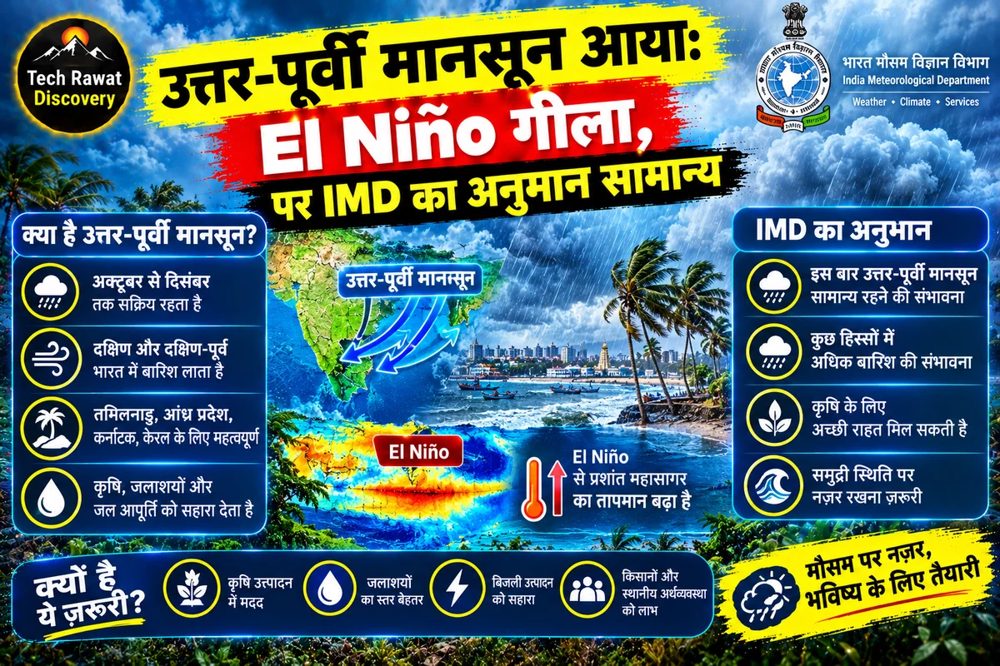
उत्तर-पूर्वी मानसून आया: El Niño गीला, पर IMD का अनुमान सामान्य
IMD ने 15 अक्टूबर 2026 को उत्तर-पूर्वी मानसून की शुरुआत घोषित की। मज़बूत El Niño के बीच अनुमान 'सामान्य' का है, पर पहले 14 दिन 72% सूखे रहे। तमिलनाडु और दक्षिण भारत के लिए मतलब।
पूरा लेख पढ़ें →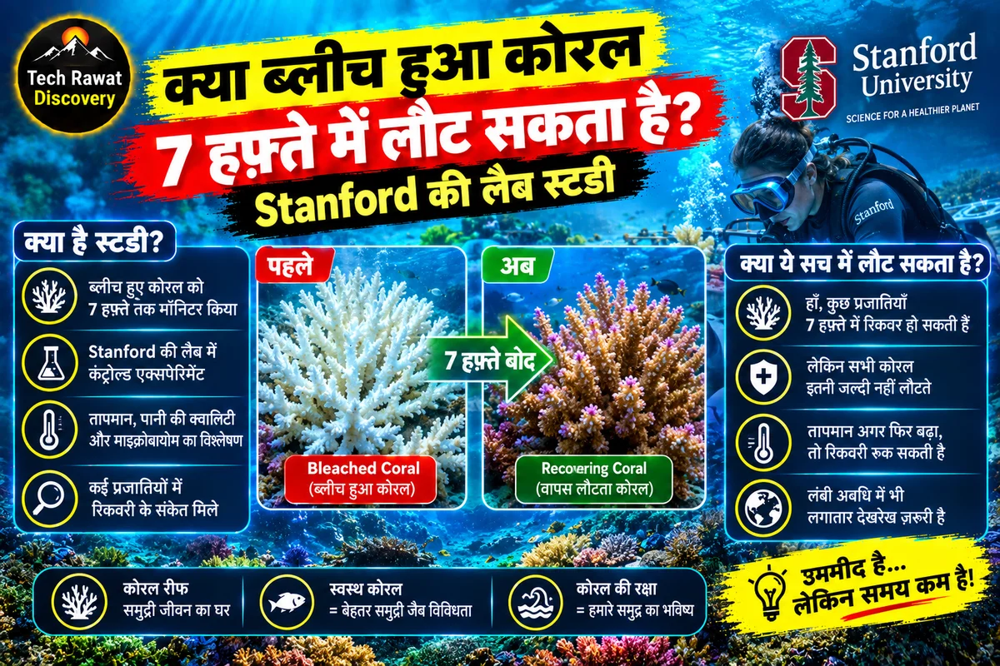
क्या ब्लीच हुआ कोरल 7 हफ़्ते में लौट सकता है? Stanford की लैब स्टडी
Stanford की लैब स्टडी में ब्लीच हुए कोरल स्वस्थ क्लोन को छूकर सात हफ़्ते में उबर गए। जानिए प्रक्रिया चरण-दर-चरण, इसकी सीमाएं और लक्षद्वीप व मन्नार की खाड़ी के लिए मतलब।
पूरा लेख पढ़ें →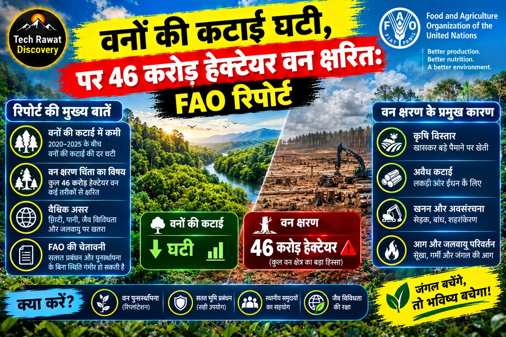
वनों की कटाई घटी, पर 46 करोड़ हेक्टेयर वन क्षरित: FAO रिपोर्ट
FAO की SOFO 2026 रिपोर्ट के अनुसार वनों की कटाई 1990 के दशक से घटी, पर शुद्ध वन-नुकसान 2015-2025 में बढ़ा और 460 मिलियन हेक्टेयर वन क्षरित हैं। भारत बहाली में दूसरे स्थान पर है।
पूरा लेख पढ़ें →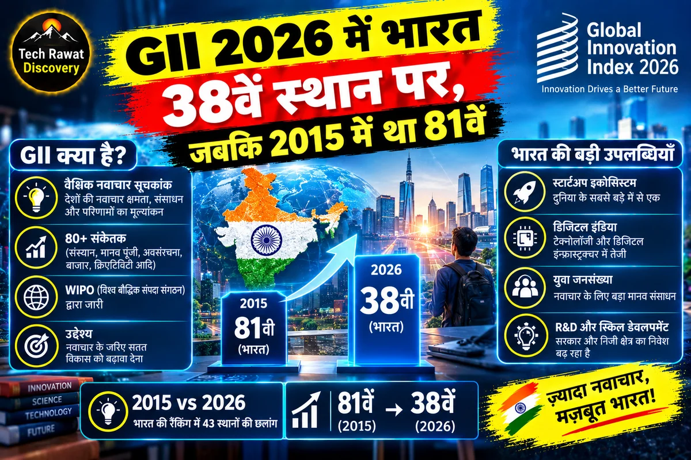
GII 2026 में भारत 38वें स्थान पर, जबकि 2015 में था 81वें
WIPO के GII 2026 में भारत 139 देशों में 38वें स्थान पर है। 2015 के 81वें स्थान से सफर, नतीजों में 25वीं और संसाधनों में 49वीं रैंक, और पेटेंट आंकड़ों का भारतीय पक्ष समझिए।
पूरा लेख पढ़ें →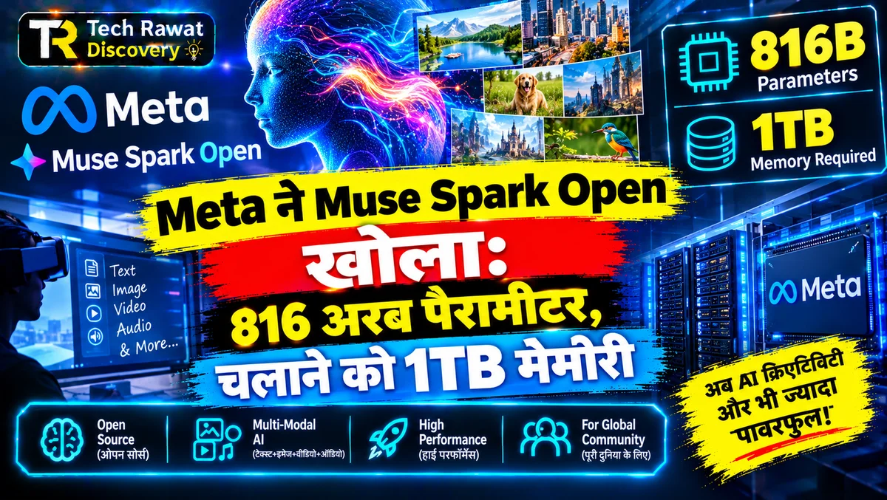
Meta ने Muse Spark Open खोला: 816 अरब पैरामीटर, चलाने को 1TB मेमोरी
Meta ने 15 अक्टूबर 2026 को 816 अरब पैरामीटर वाले Muse Spark Open के वज़न खोले। इसे चलाने को करीब 1TB मेमोरी चाहिए, यानी दो Apple M5 Ultra Mac Studio। भारत के लिए क्या मायने, पढ़िए।
पूरा लेख पढ़ें →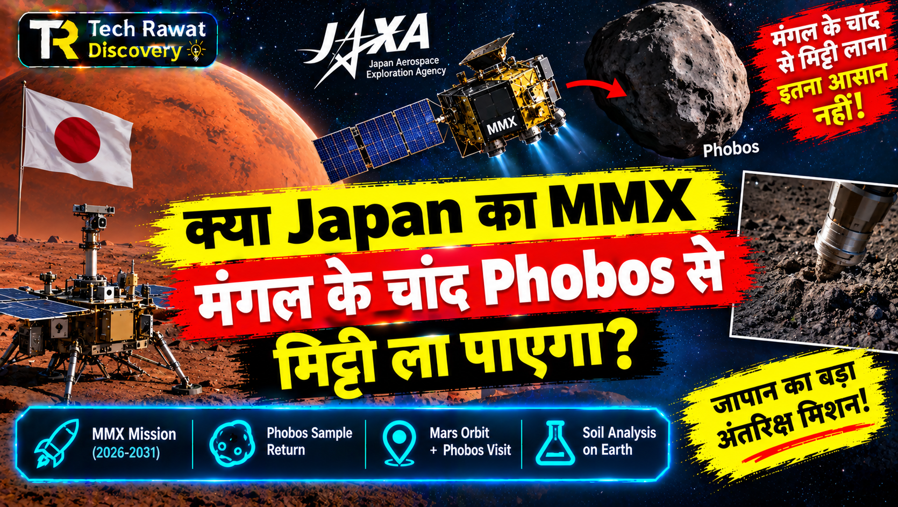
क्या Japan का MMX मंगल के चांद Phobos से मिट्टी ला पाएगा?
JAXA का MMX मिशन भारतीय समय 20 अक्टूबर की रात 1:11 बजे उड़ेगा। लक्ष्य है मंगल के चांद Phobos से कम से कम 10 ग्राम सैंपल लाकर 2031 में ऑस्ट्रेलिया में उतारना।
पूरा लेख पढ़ें →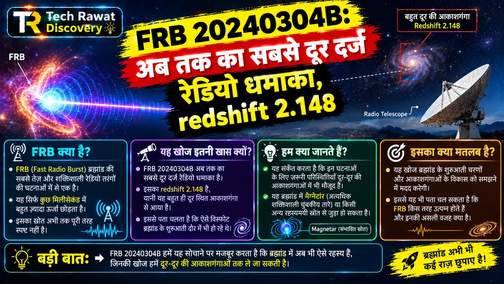
FRB 20240304B: अब तक का सबसे दूर दर्ज रेडियो धमाका, redshift 2.148
Science के नए शोध में FRB 20240304B अब तक का सबसे दूर दर्ज रेडियो धमाका निकला, 10 अरब साल पुराना। जानिए इसका सच, एलियन वाली गलतफहमी और भारत के GMRT-SKA का रिश्ता।
पूरा लेख पढ़ें →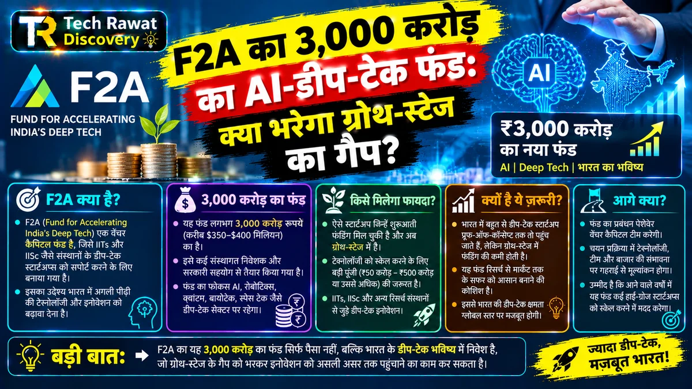
F2A का 3,000 करोड़ का AI-डीप-टेक फंड: क्या भरेगा ग्रोथ-स्टेज का गैप?
Fundamentum Frontier Advisors ने AI और डीप-टेक फंड के लिए 3,000 करोड़ रुपए की सब्सक्रिप्शन जुटाई, नंदन नीलेकणि एंकर हैं। 12-15 कंपनियों में 100-200 करोड़ के चेक का मतलब समझिए।
पूरा लेख पढ़ें →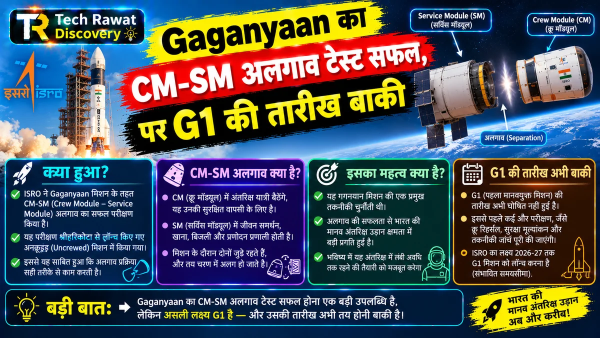
Gaganyaan का CM-SM अलगाव टेस्ट सफल, पर G1 की तारीख बाकी
ISRO ने 16 अक्टूबर 2026 को Gaganyaan के Crew Module और Service Module के सेपरेशन टेस्ट पूरे होने की घोषणा की। जानिए सवाल-जवाब में टेस्ट क्या परखता है और G1 की तारीख क्यों बाकी है।
पूरा लेख पढ़ें →128GB तक मेमोरी वाला RTX Spark लैपटॉप आया, क़ीमत $2,599 से शुरू
16 अक्टूबर 2026 को NVIDIA RTX Spark लैपटॉप बिक्री पर आए। स्वतंत्र समीक्षाओं में AI और GPU तेज़ निकले, पर CPU और बैटरी में कमज़ोर। चार भ्रम, सच और भारत के लिए मतलब जानिए।
पूरा लेख पढ़ें →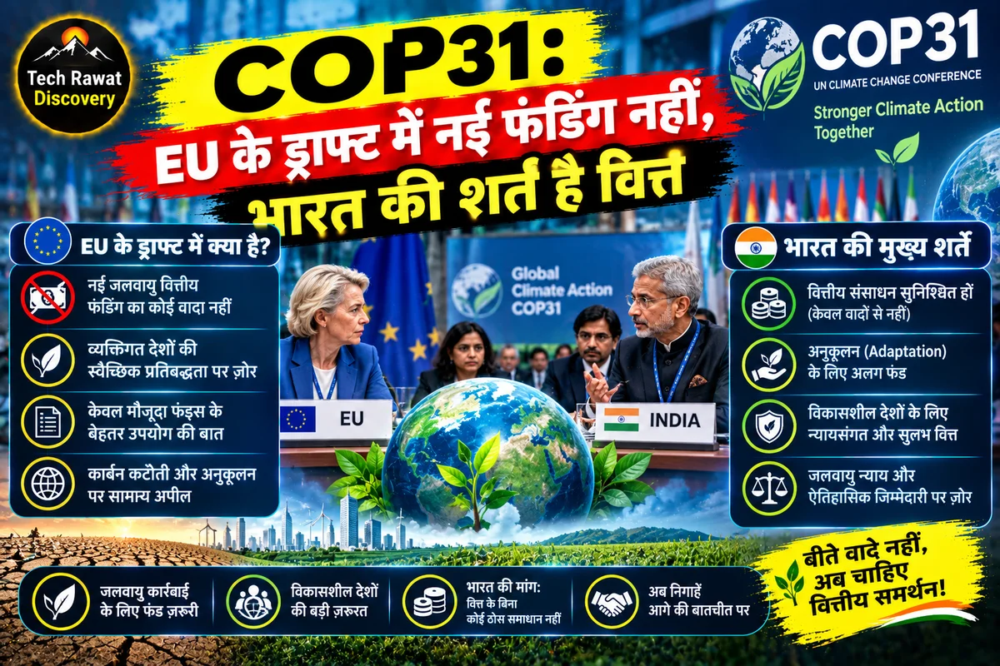
COP31: EU के ड्राफ्ट में नई फंडिंग नहीं, भारत की शर्त है वित्त
Reuters के अनुसार EU के आंतरिक ड्राफ्ट में COP31 के लिए नई क्लाइमेट फंडिंग की कोई गुंजाइश नहीं है, जबकि भारत ऊंची महत्वाकांक्षा के साथ वित्त मांग रहा है। दोनों रुख तालिका में।
पूरा लेख पढ़ें →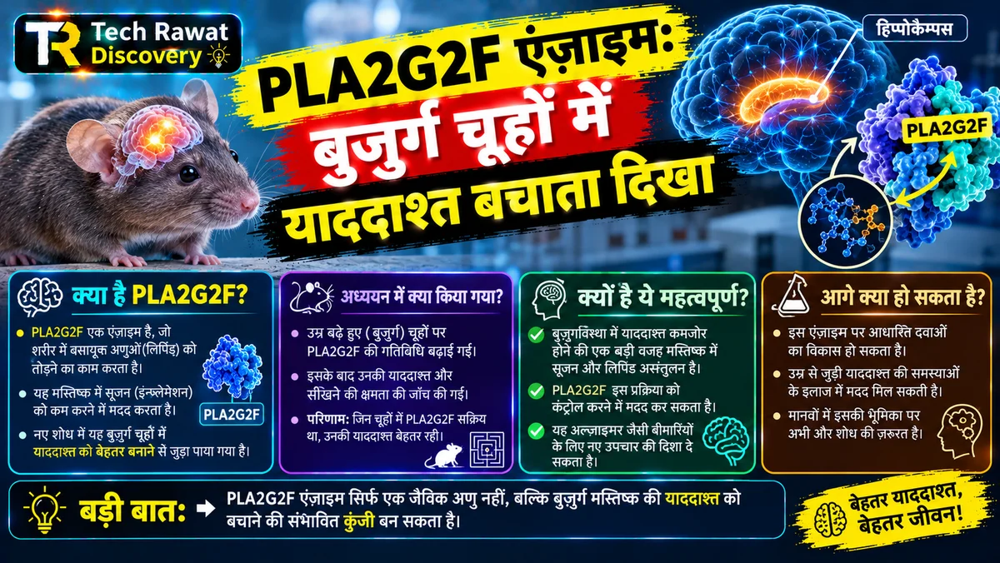
PLA2G2F एंज़ाइम: बुज़ुर्ग चूहों में याददाश्त बचाता दिखा
Nature Neuroscience की नई स्टडी में उम्र के साथ बढ़ने वाला PLA2G2F एंज़ाइम बुज़ुर्ग चूहों की याददाश्त बचाता दिखा। जानिए तीन भ्रम, इंसानी सबूत की सीमा और भारत का संदर्भ।
पूरा लेख पढ़ें →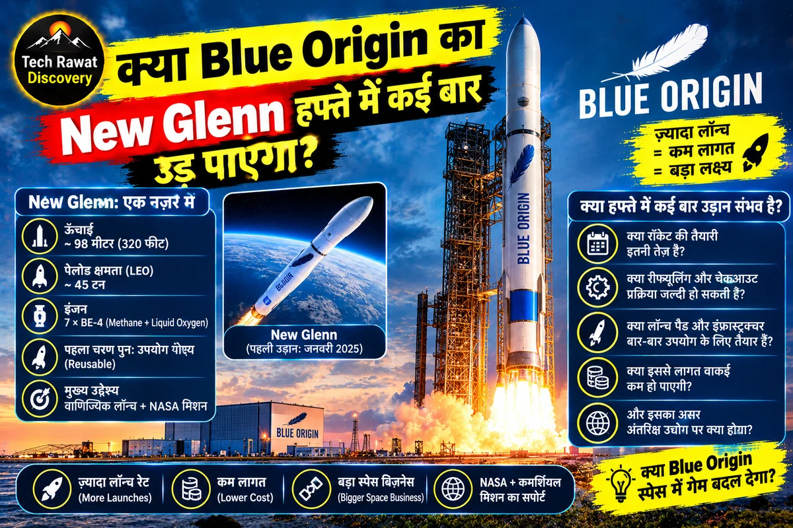
क्या Blue Origin का New Glenn हफ्ते में कई बार उड़ पाएगा?
Blue Origin Florida में नए लॉन्च पैड जोड़कर New Glenn की सालाना उड़ानें 12 से 50 तक ले जाना चाहता है। FAA की मंज़ूरी बाकी है। जानिए भारत के 50 उड़ान लक्ष्य से आमने-सामने की तुलना।
पूरा लेख पढ़ें →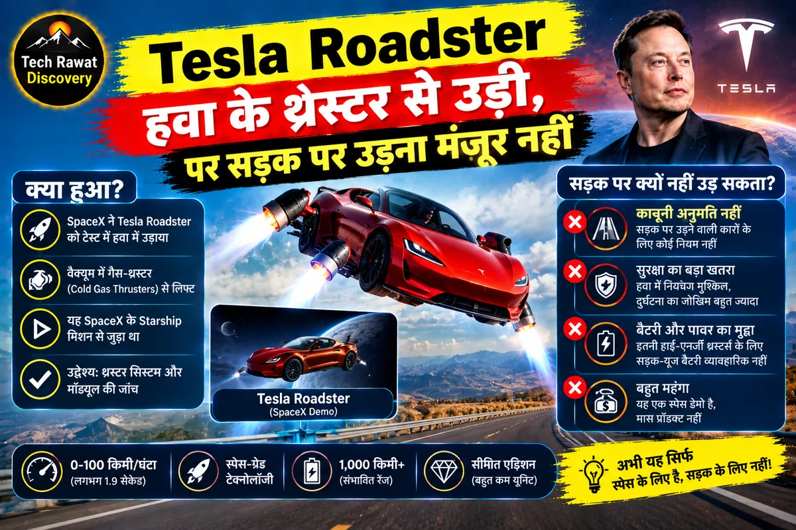
Tesla Roadster हवा के थ्रस्टर से उड़ी, पर सड़क पर उड़ना मंज़ूर नहीं
Tesla की नई Roadster ने 15 अक्टूबर 2026 को SpaceX के कोल्ड-गैस थ्रस्टर से उड़ान दिखाई। जानिए 600 लीटर दबी हवा से यह कैसे चलता है, तीन ट्रिम और भारत की eVTOL योजना से फ़र्क़।
पूरा लेख पढ़ें →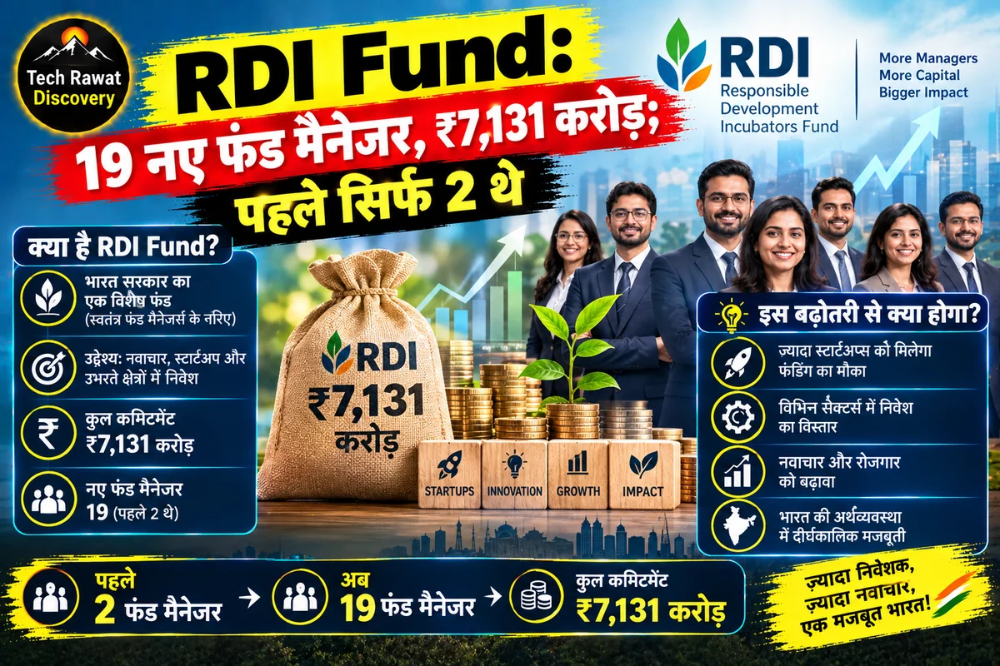
RDI Fund: 19 नए फंड मैनेजर, ₹7,131 करोड़; पहले सिर्फ़ 2 थे
PIB के अनुसार RDI Fund ने 19 नए फंड मैनेजर चुने हैं, कुल प्रतिबद्धता ₹7,131 करोड़। पहले सिर्फ़ TDB और BIRAC थे। जानिए पहले बनाम अब, औसत हिसाब और बाकी सवाल।
पूरा लेख पढ़ें →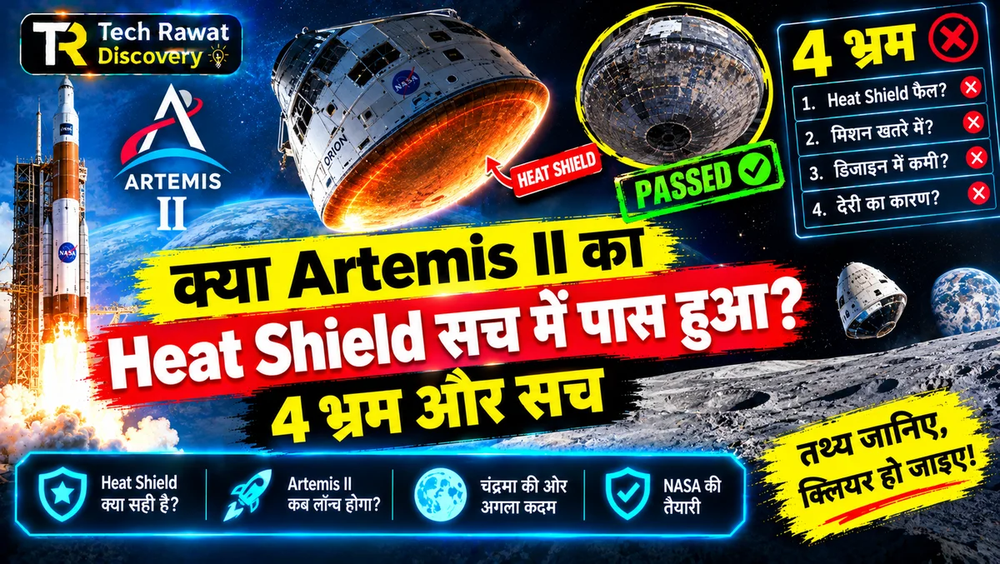
क्या Artemis II का Heat Shield सच में पास हुआ? 4 भ्रम और सच
NASA के मुताबिक Artemis II के heat shield पर जली परत के नुकसान की सिर्फ 9 जगहें मिलीं, Artemis I में 103 थीं। जानिए इस खबर पर चार भ्रम, सच और भारत के लिए इसका मतलब।
पूरा लेख पढ़ें →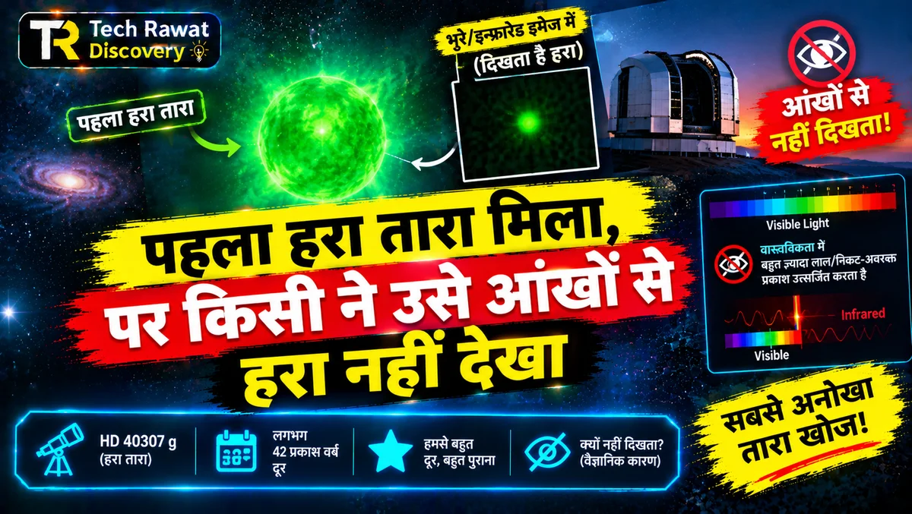
पहला हरा तारा मिला, पर किसी ने उसे आंखों से हरा नहीं देखा
वारविक विश्वविद्यालय के खगोलविदों ने पहला हरा तारा WD J1330+6435 खोजा है, पर उसका रंग स्पेक्ट्रम से निकाला गया है। जानिए सोडियम, कार्बन और सबसे लाल तारे का पूरा मामला।
पूरा लेख पढ़ें →10,000 GPU तक का पैनल: पास होने को 100 में 60 अंक चाहिए
C-DAC ने 10,000 AI कंप्यूट यूनिट तक के लिए कंपनियों का पैनल बनाने का RFE निकाला है। जानिए शर्तें, 100 में 60 अंक का गणित और स्टार्टअप व कॉलेजों पर असर।
पूरा लेख पढ़ें →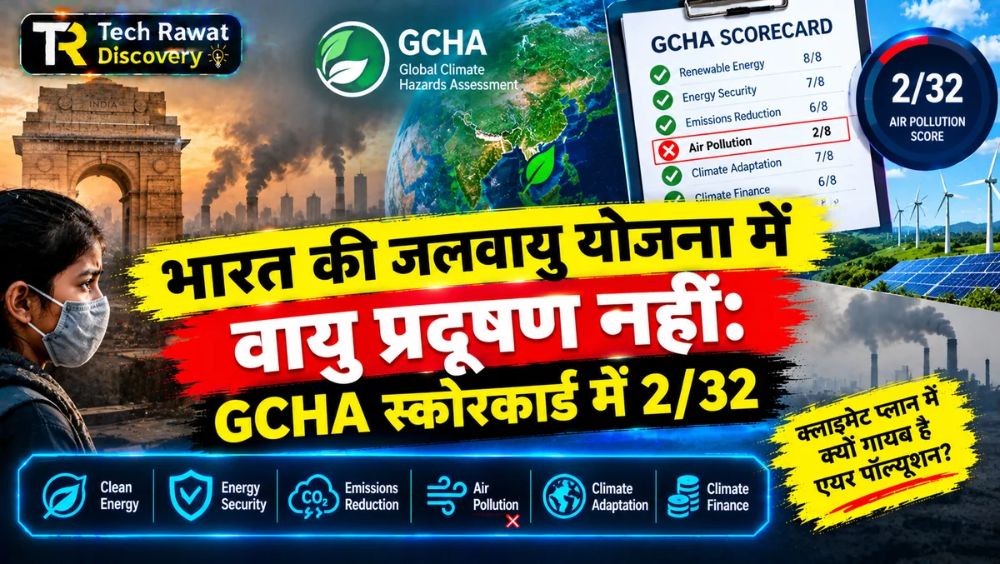
भारत की जलवायु योजना में वायु प्रदूषण नहीं: GCHA स्कोरकार्ड में 2/32
GCHA के 14 अक्टूबर 2026 के स्कोरकार्ड में भारत को स्वास्थ्य के पैमाने पर 32 में सिर्फ 2 अंक मिले। अप्रैल 2026 की जलवायु योजना में वायु प्रदूषण का ज़िक्र नहीं, जबकि मौतें करीब 20 लाख हैं।
पूरा लेख पढ़ें →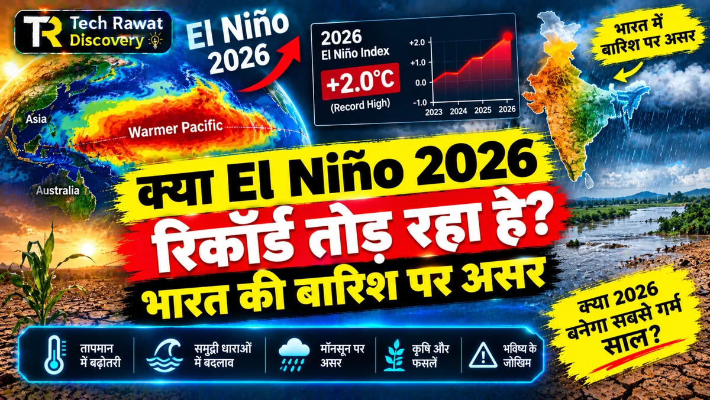
क्या El Niño 2026 रिकॉर्ड तोड़ रहा है? भारत की बारिश पर असर
Copernicus के अनुसार सितंबर 2026 में Niño 3.4 का तापमान 29.70°C रहा, पिछले तीनों बहुत मज़बूत El Niño के शिखर से ऊपर। IMD के आउटलुक के साथ समझिए भारत के लिए इसका मतलब।
पूरा लेख पढ़ें →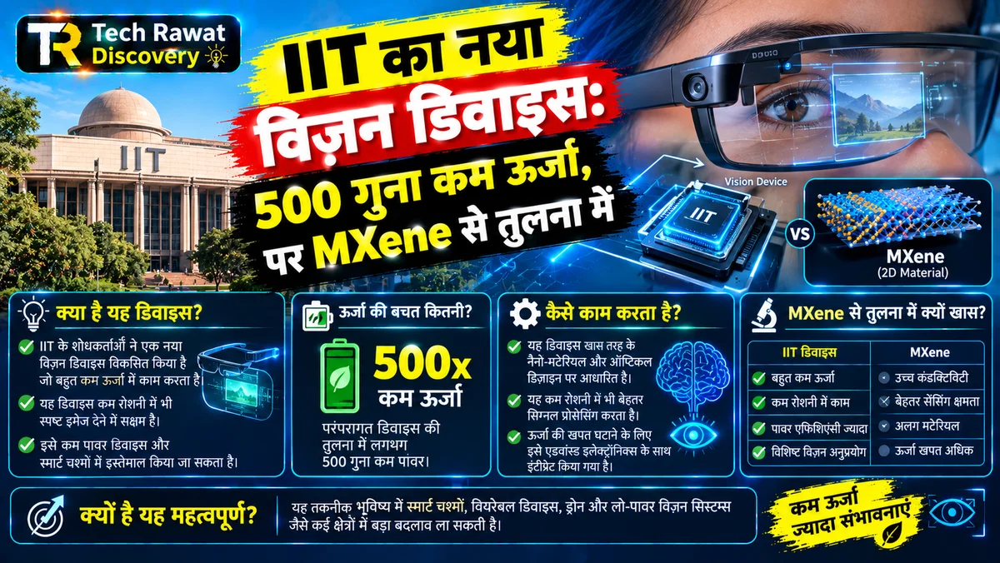
IIT का नया विज़न डिवाइस: 500 गुना कम ऊर्जा, पर MXene से तुलना में
IIT गुवाहाटी और IIT खड़गपुर का नया डिवाइस रोशनी को देखता, याद रखता और प्रोसेस करता है। लैब में ऊर्जा 500 गुना कम दिखी, पर तुलना सिर्फ MXene डिवाइसों से है।
पूरा लेख पढ़ें →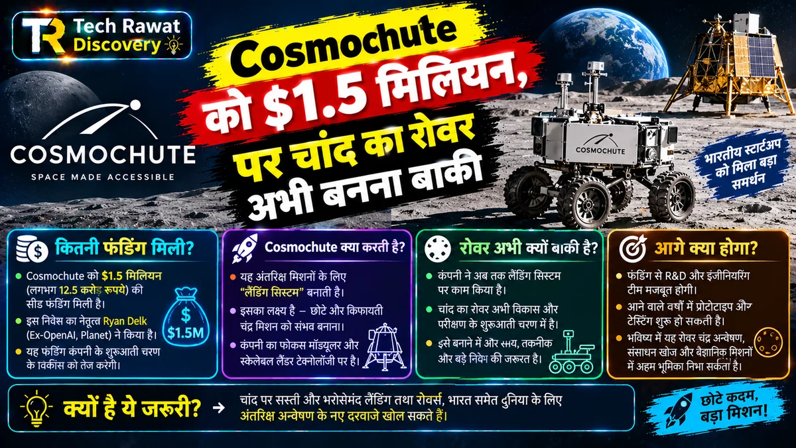
Cosmochute को $1.5 मिलियन, पर चांद का रोवर अभी बनना बाकी
Accel और Prosus Ventures की अगुवाई में Cosmochute को $1.5 मिलियन की pre-seed फंडिंग मिली। कंपनी इसी साल बनी है और चांद के लिए LEAP प्लेटफ़ॉर्म अभी बनना बाकी है।
पूरा लेख पढ़ें →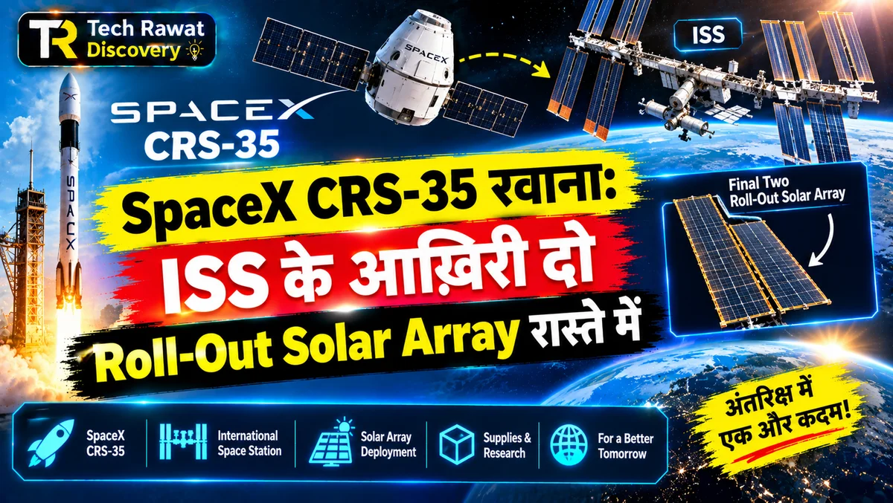
SpaceX CRS-35 रवाना: ISS के आख़िरी दो Roll-Out Solar Array रास्ते में
Falcon 9 ने 13 अक्टूबर 2026 को ISS के लिए आख़िरी दो रोल-आउट सोलर ऐरे रवाना किए। ये नापने वाले टेप की तरह लिपटकर जाते हैं और कक्षा में खुलते हैं। जानिए पूरी प्रक्रिया और भारत के लिए सबक।
पूरा लेख पढ़ें →क्या AI ने सच में दक्षिण कोरिया के 7 बैंकों में सेंध लगाई?
दक्षिण कोरिया के 7 वित्तीय संस्थानों से 68,000 से ज़्यादा लोगों का डेटा चोरी हुआ। राष्ट्रपति ने AI के संकेत बताए, पर भूमिका अपुष्ट है। जानिए सबूत कितना पक्का है और भारत के लिए क्या मायने हैं।
पूरा लेख पढ़ें →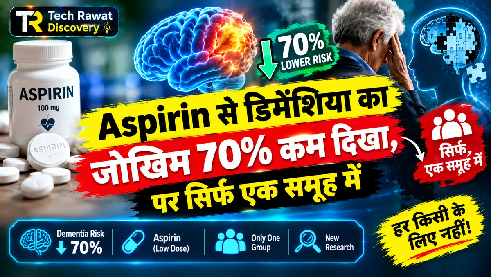
Aspirin से डिमेंशिया का जोखिम 70% कम दिखा, पर सिर्फ़ एक समूह में
Monash की नई analysis में aspirin लेने वाले एक ख़ास जेनेटिक समूह में डिमेंशिया 1.0% बनाम 3.3% दिखा, पर गंभीर रक्तस्राव भी दोगुना रहा। जानिए भारत के लिए इसके मायने।
पूरा लेख पढ़ें →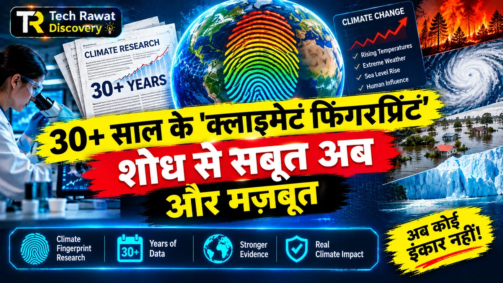
30+ साल के 'क्लाइमेट फिंगरप्रिंट' शोध से सबूत अब और मज़बूत
12 अक्टूबर 2026 को छपी एक बड़ी समीक्षा कहती है कि इंसानी असर के 'क्लाइमेट फिंगरप्रिंट' सबूत अब निर्विवाद हैं। जानें यह विवाद क्यों शुरू हुआ, 1995 से अब तक सबूत कैसे बदला, और भारत के लिए मतलब।
पूरा लेख पढ़ें →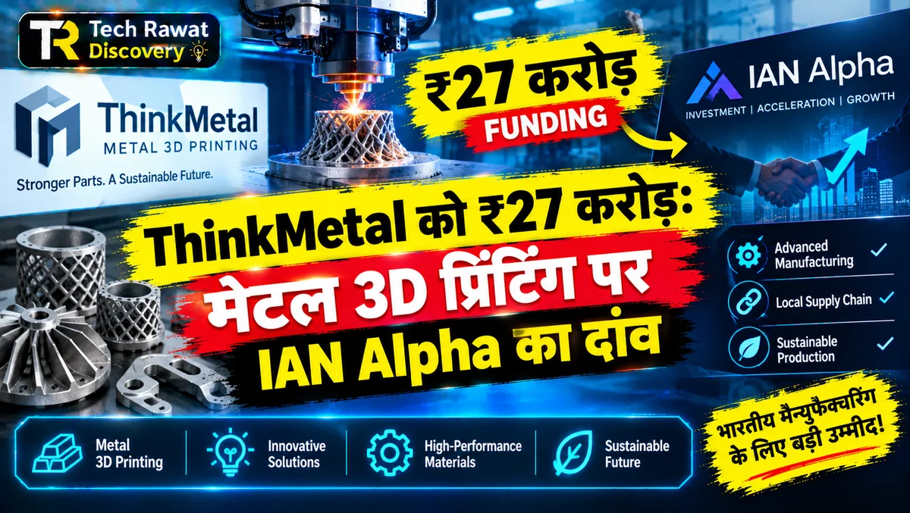
ThinkMetal को ₹27 करोड़: मेटल 3D प्रिंटिंग पर IAN Alpha का दांव
चेन्नई की ThinkMetal ने IAN Alpha Fund की अगुआई में ₹27 करोड़ जुटाए। कंपनी मेटल 3D प्रिंटिंग से औज़ार 10 गुना तेज़ बनाने का दावा करती है, पर दावा अभी परखना बाकी है।
पूरा लेख पढ़ें →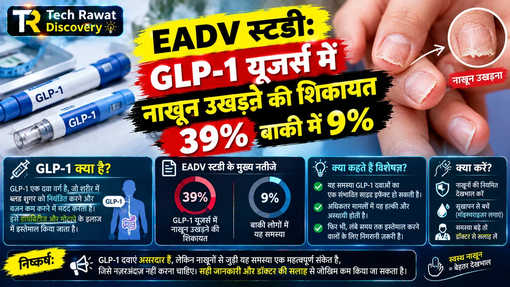
EADV स्टडी: GLP-1 यूज़र्स में नाखून उखड़ने की शिकायत 39%, बाकी में 9%
GLP-1 दवा लेने वालों में 39% ने नाखून उखड़ने की शिकायत की, बाकियों में 9%। EADV स्टडी संबंध दिखाती है, कारण नहीं; सस्ती semaglutide वाले भारत के लिए इसके मायने जानिए।
पूरा लेख पढ़ें →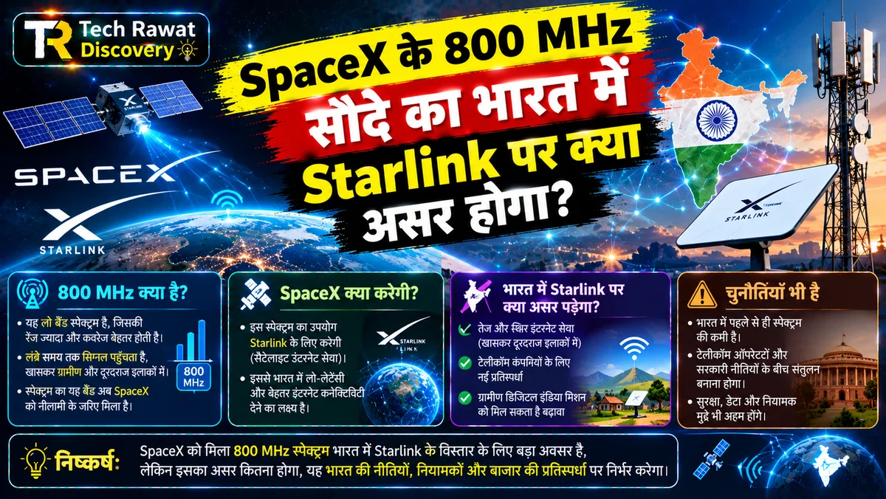
SpaceX के 800 MHz सौदे का भारत में Starlink पर क्या असर होगा?
SpaceX ने अमेरिका में Grain Management से 800 MHz स्पेक्ट्रम ख़रीदने का सौदा किया और टेलीकॉम शेयर गिरे। भारत में Starlink की राह इससे नहीं खुलती; वहां सुरक्षा मंज़ूरी और शुल्क बाक़ी हैं।
पूरा लेख पढ़ें →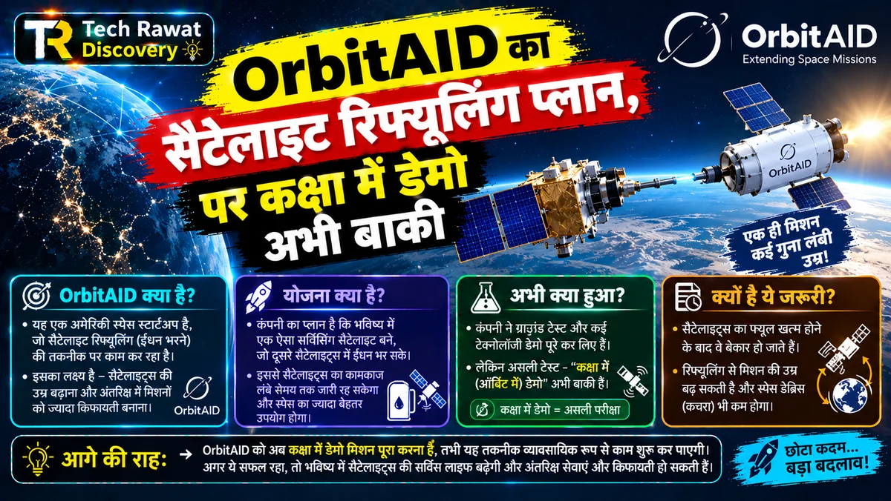
OrbitAID का सैटेलाइट रिफ्यूलिंग प्लान, पर कक्षा में डेमो अभी बाकी
OrbitAID फरवरी 2027 में सैटेलाइट रिफ्यूलिंग और डॉकिंग का डेमो करना चाहती है, पर जनवरी का पहला प्रयास PSLV की विफलता में अधूरा रहा। जानिए क्या हो चुका और क्या सिर्फ़ योजना है।
पूरा लेख पढ़ें →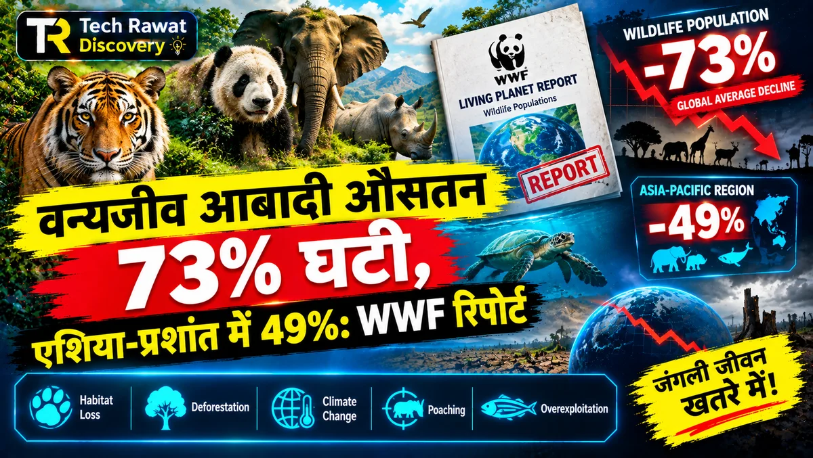
वन्यजीव आबादी औसतन 73% घटी, एशिया-प्रशांत में 49%: WWF रिपोर्ट
WWF की Living Planet Report 2026 के अनुसार निगरानी वाली वन्यजीव आबादी 1970-2022 में औसतन 73% घटी। लैटिन अमेरिका में 95%, एशिया-प्रशांत में 49%। जानिए इसका सही मतलब और भारत का हिसाब।
पूरा लेख पढ़ें →